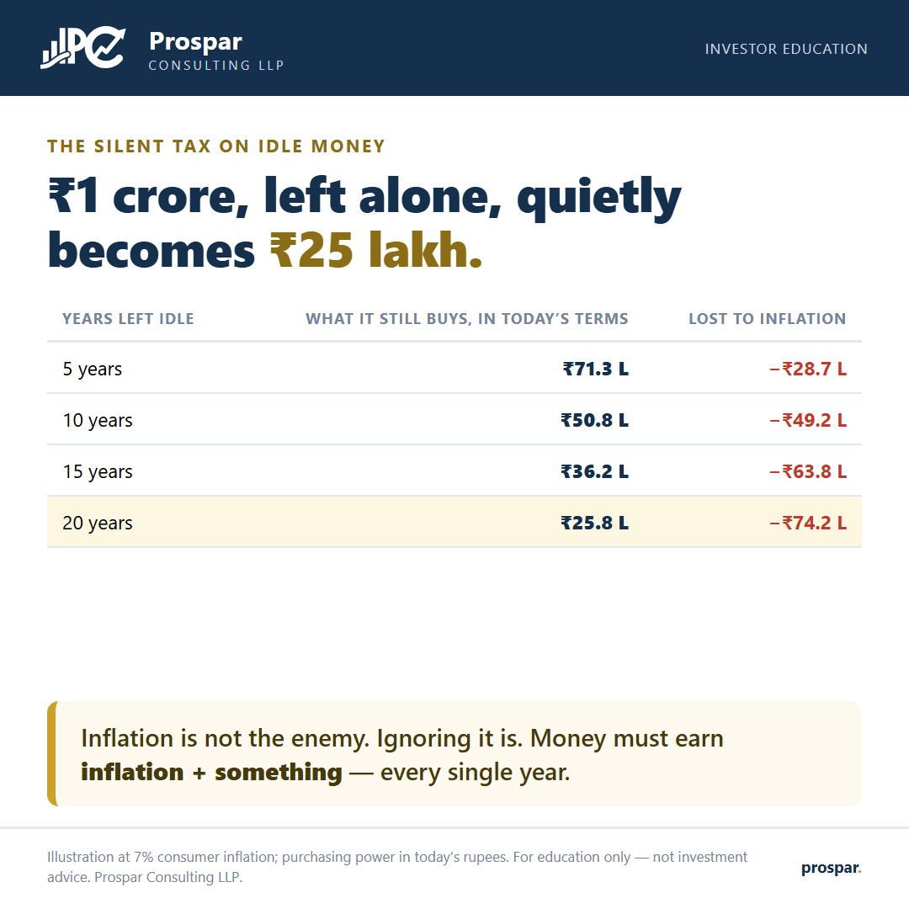
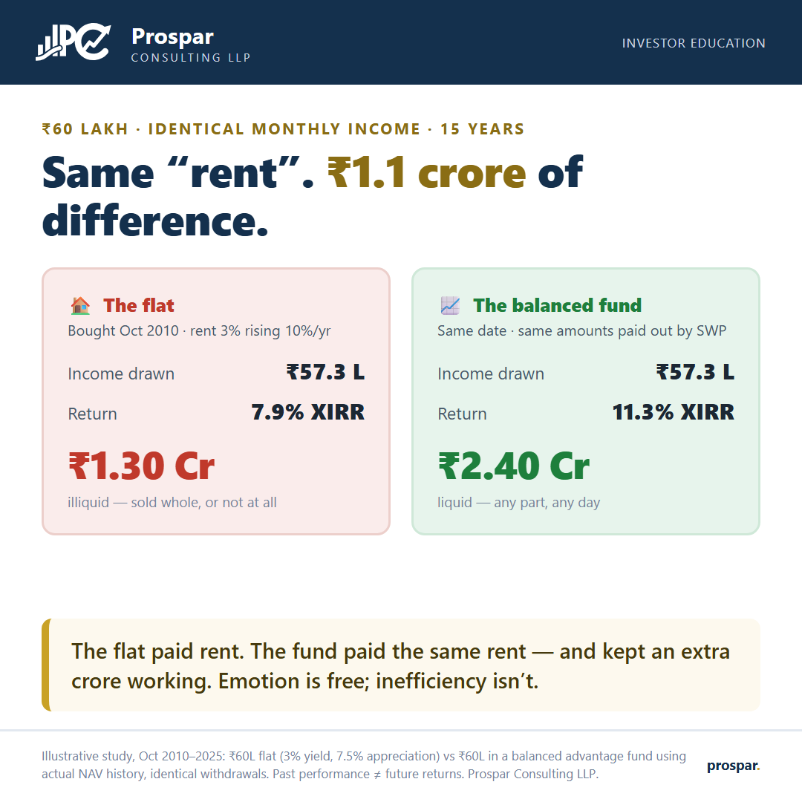
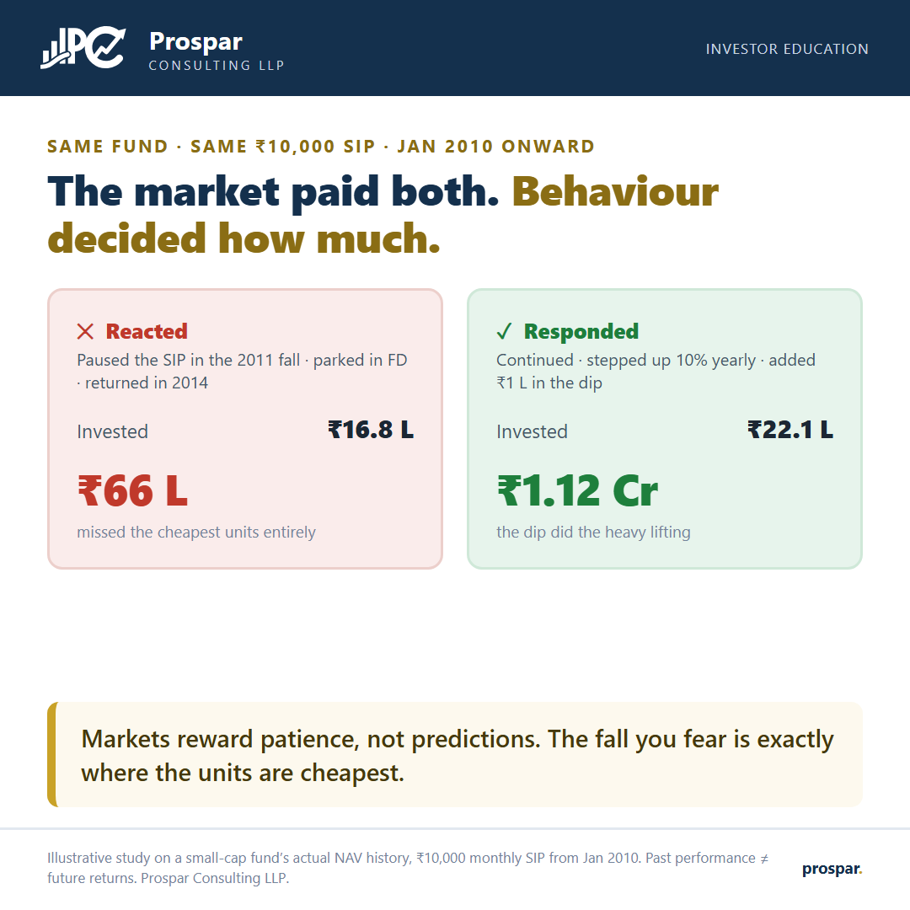
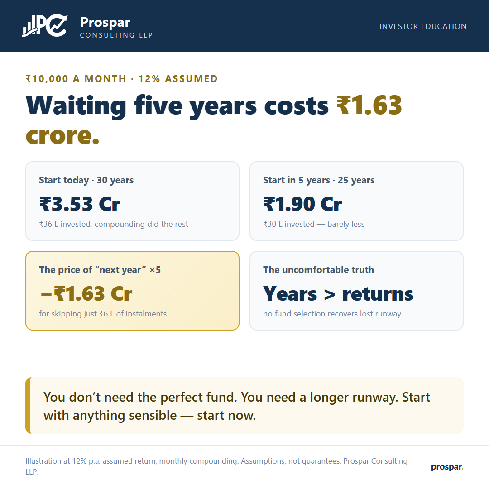
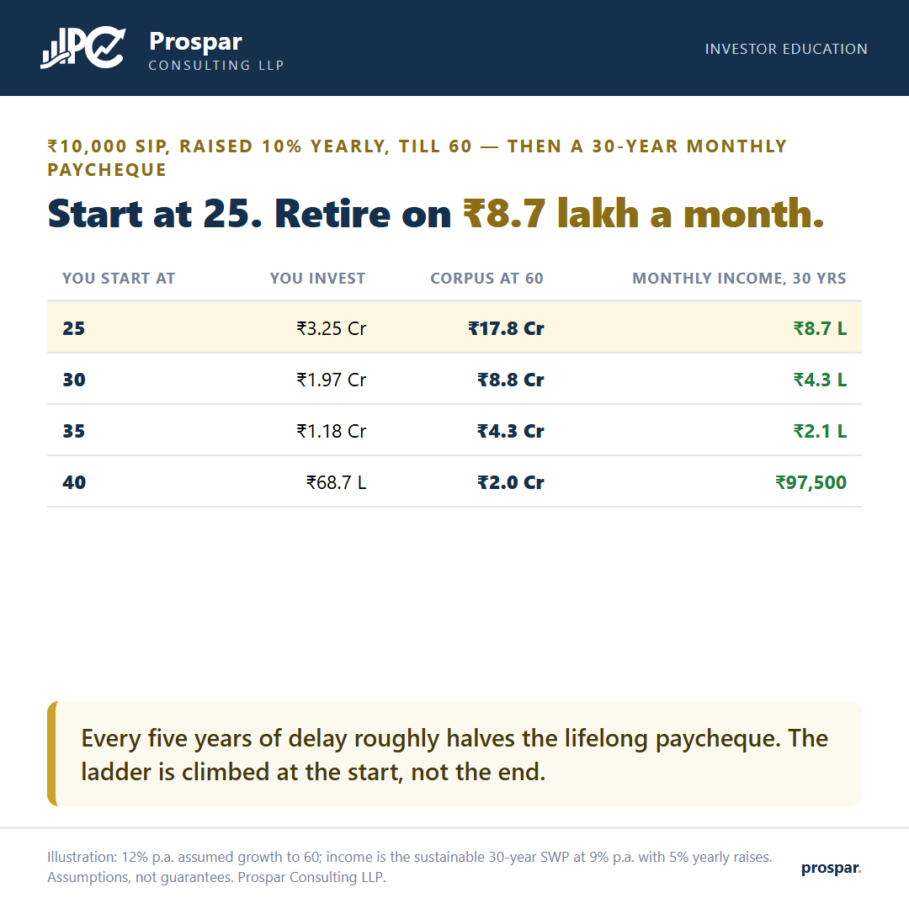
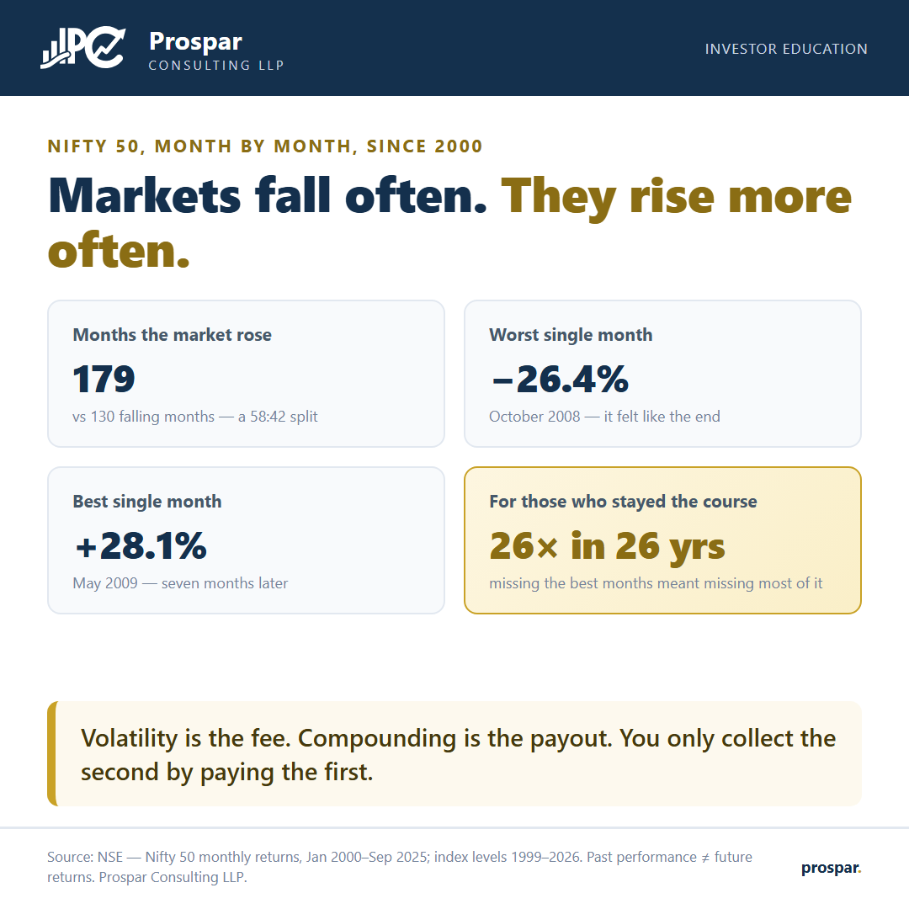
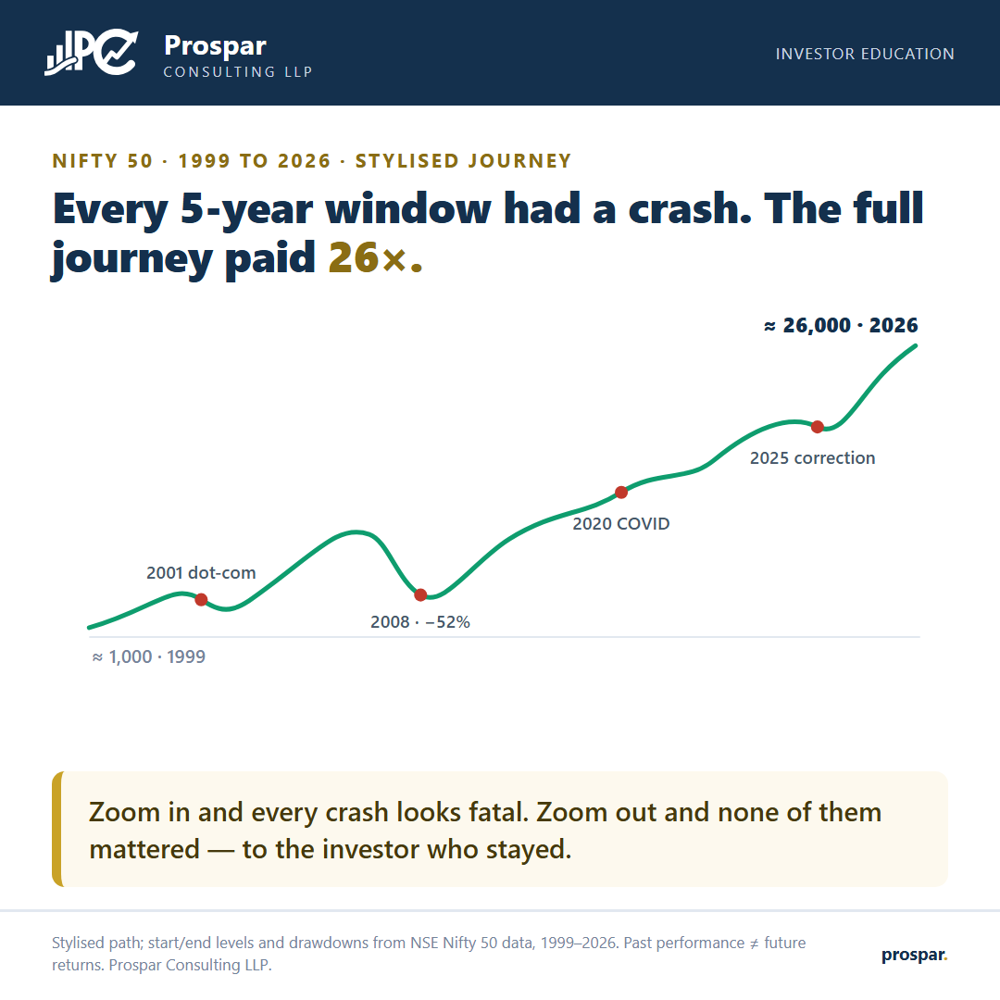
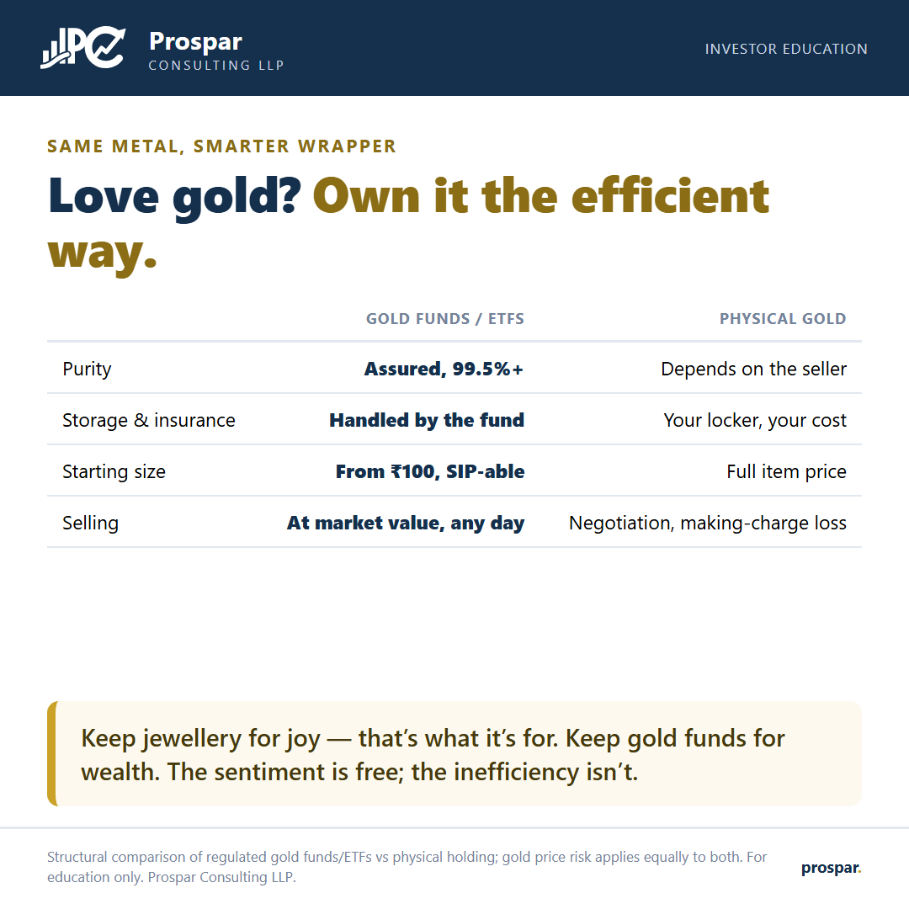
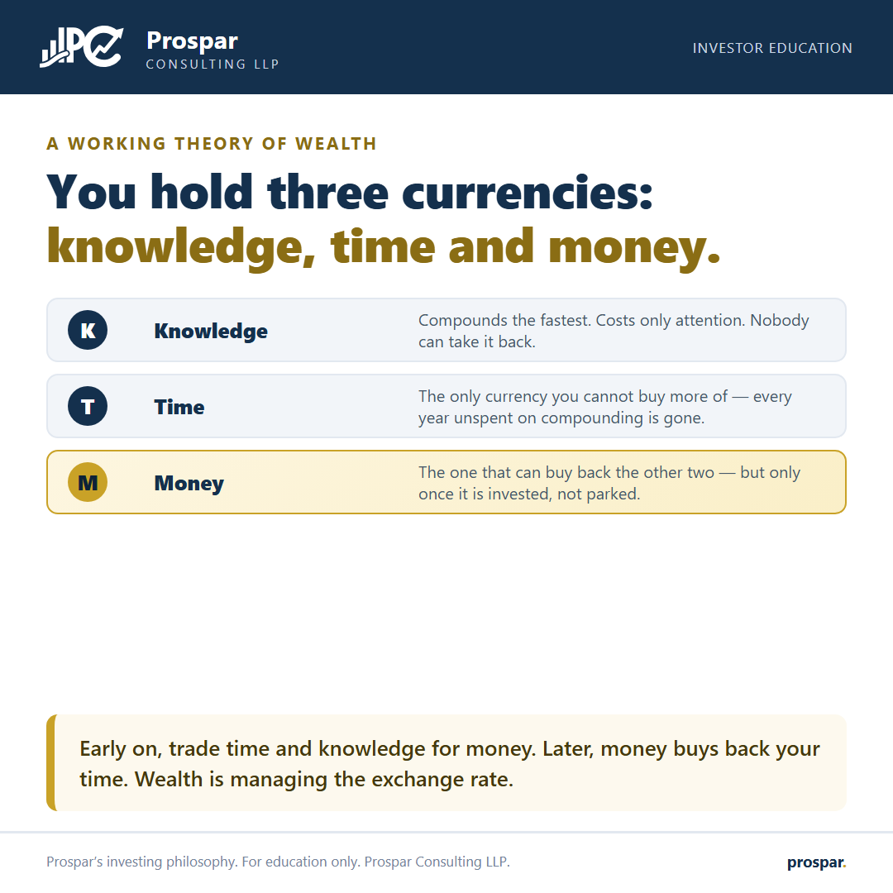
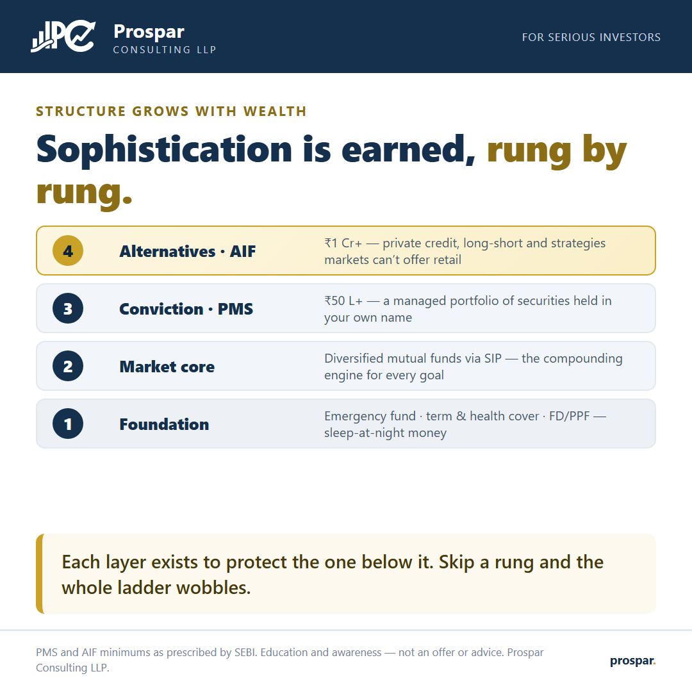

Insights
The data behind disciplined investing — short, honest, and backed by numbers you can check yourself in our calculators.
Featured stories
Each one opens as a full page you can share — the link preview shows the creative itself.

SIPs look broken in year 3 — that's when they're being built
Same funds, same ₹10,000 SIP: quitting froze ₹3.5L at ~₹4L; continuing reached up to ₹1.07 Cr.
Read
₹1 crore, left alone, quietly becomes ₹25 lakh
The silent tax on idle money — and the three-part defence against it.
ReadWhy last year's best fund keeps disappointing
18 years of rankings: the topper keeps changing, patience keeps winning.
Read
The ₹60 lakh question: flat or fund?
Identical monthly income for 15 years — ₹1.30 Cr vs ₹2.40 Cr, and only one is liquid.
Read
Which rung of the wealth ladder are you on?
Seven stages from Dependent to Abundance — and the next step for each.
ReadThe creative library
More of our investor-education creatives — tap any card to view or download the full-size image.

The behaviour gap
Same fund, same SIP — ₹66 L vs ₹1.12 Cr.

The cost of "next year"
Waiting five years costs ₹1.63 crore.

One SIP, lifetime paycheques
Start at 25, retire on ₹8.7 lakh a month.

The data behind the emotion
179 rising months vs 130 falling, since 2000.

Every window had a crash
And the full journey still paid 26×.
The delisting register
1,281 forced exits in 12 years — diversify.

SIP vs EMI
Same monthly amount, opposite directions.

Gold, the efficient way
Same metal, smarter wrapper.

Three currencies
Knowledge, time, money — manage the exchange rate.

The product ladder
Foundation → funds → PMS → AIF, rung by rung.
All insights are for education only and do not constitute investment advice. Figures are from cited public data or clearly-labelled illustrations with stated assumptions; past performance does not guarantee future returns. Mutual fund and market-linked investments are subject to market risks. Prospar Consulting LLP.